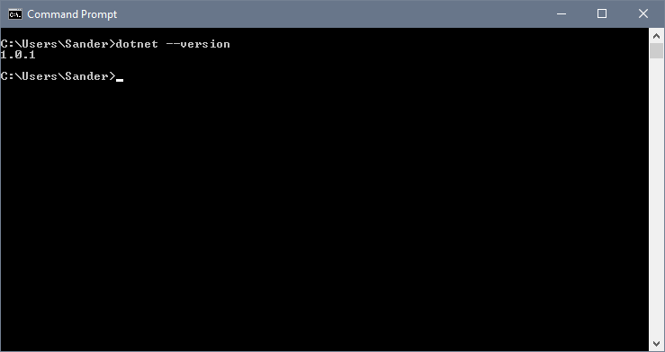
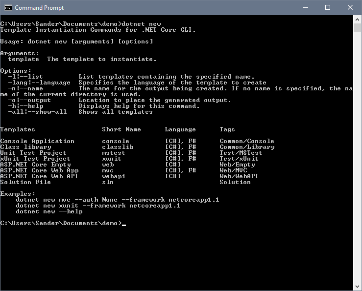
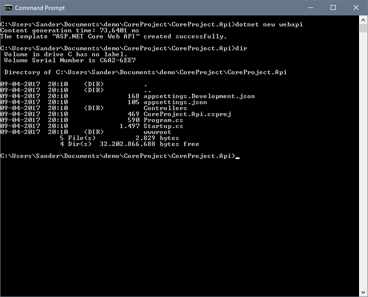
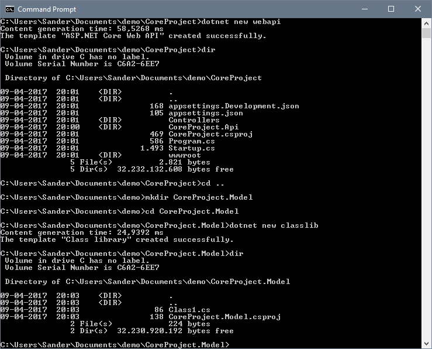
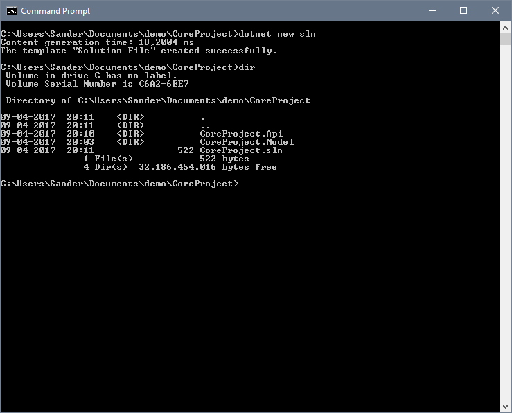
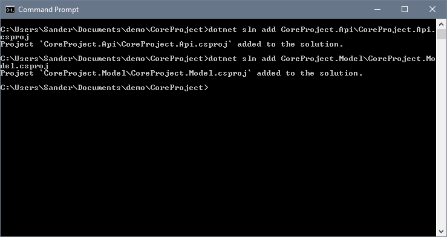
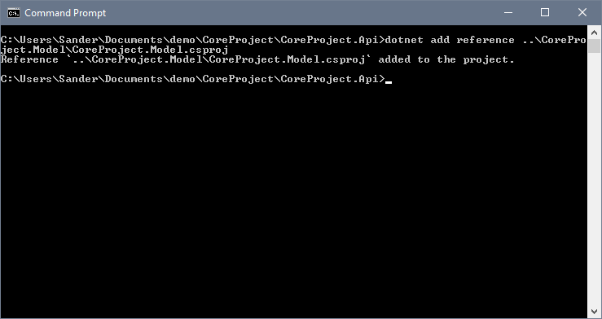
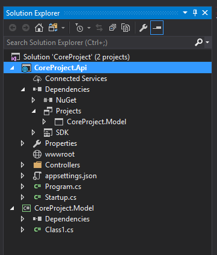

Dotnet Core tooling quickstart
With the .NET Core tools finally showing signs of stabilizing in version 1.0.1 we can have a little look at how you can get started with a new project using just the tools.
You can download the new stuff here. I'm writing this post using the 1.0.1 version of the tools.

A new very nice thing is that the new tooling comes with some built in templates you can use instead of relying on something like Yeoman to create an empty project for you. The dotnet new command is still the way to create a new project (like it was in the older tools) but you can now specify what kind of project you want as a base.

Console, web, api and even test, the most important things are covered. With all these new things we also get sln as an option, this will let us create and manage solutions! Let's give these new bits a little test drive and setup a basic project with few class libraries.
Start with making a folder for the project using mkdir CoreProject and move into the new folder. This folder will serve as the root for the rest of the projects.
Create another new folder using mkdir CoreProject.Api and move into it. Now create a new WebApi project using dotnet new webapi. This should leave you with the following stuff in the folder:

Move up a level and create another folder with mkdir CoreProject.Model. Move into the new empty folder and create a class library there with dotnet new classlib.

Now that we have two projects ready to go, we need to put the pieces together and create a solution for our newly created things. Go up a directory to our root folder and create a new solution using dotnet new sln.

Notice how the commands we've executed so far take the folder name as the project names by default.
Time to add the projects to the solution!

Using dotnet sln add <.csproj file path here> we can add projects to the solution. As you can see in the screenshot, the command dotnet sln add CoreProject.Api\CoreProject.Api.csproj added our WebApi project to the solution file.
Last step, we want our WebApi project to reference the Model class library so we can use stuff from the Model project in the Api project. Move into the CoreProject.Api folder first, then, execute the following command dotnet add reference ..\CoreProject.Model\CoreProject.Model.csproj to link the Model project to the Api Project.

Using the dotnet add reference command you can add references to your projects by pointing it to the .csproj file of the project you want to reference. You have to execute this command from the folder with the .csproj file you want the reference to be added to.
To make sure we have everything in order, fire up visual studio and check it out.

You could do all this right from within Visual Studio but as we've seen above, you can do it from the command line in just a few commands. Great for when you are using VS Code or other smaller editor instead of the big Visual Studio.